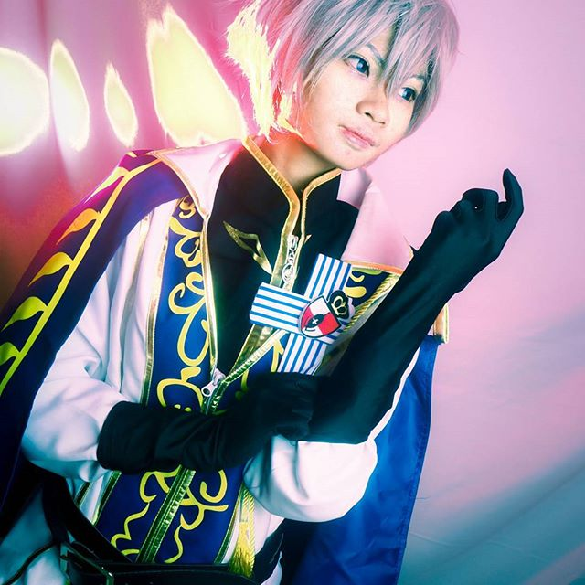
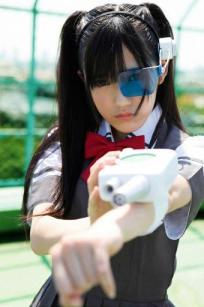
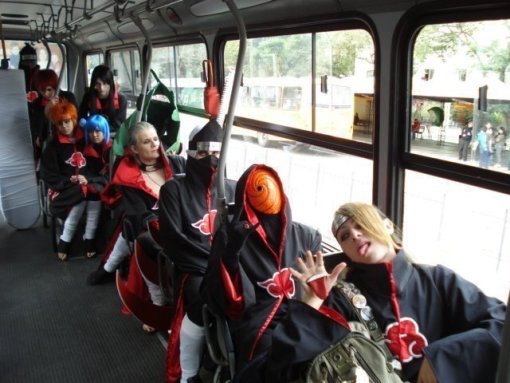
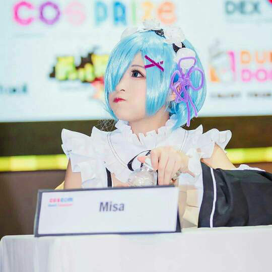
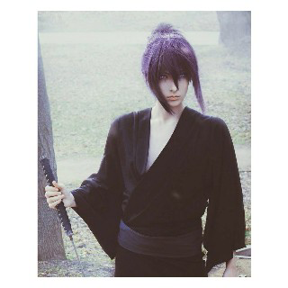

Definiton of Cosplay

Cosplay ( Costume Play )
Pernahkah saat teman - teman pergi ke Event Anime melihat orang yang berdandan seperti karakter pada Anime, Manga, atau Game?, Orang - orang yang melakukan hal tersebut adalah para Cosplayer ( Pemain Cosplay ), Mereka berdandan seperti karakter karena biasanya mereka mengikuti kontes Cosplay ataupun Coswalk yang diadakan di Event tersebut. Untuk lebih jelasnya akan saya jelaskan secara detail.




Cosplay adalah istilah dalam bahasa inggris yang dibuat oleh Jepang (wasei-eigo) yang asalnya dari gabungan dua kata, yaitu “costum” yang artinya kostum dan “play” yang artinya bermain, costum dan play disingkat menjadi cosplay. Cosplay sendiri berarti hobi memakai pakaian dan aksesoris maupun rias wajah seperti yang biasa dipakai oleh tokoh-tokoh dalam anime, manga, dongeng, game, video, penyayi maupun musisi idole, dan film kartun. Cosplay (コスプレ) dibaca dalam bahasa Jepang kosupure. Orang yang melakukan cosplay disebut cosplayer.
Pembagian Cosplay berdasarkan karakter yang dimainkan
- Cosplay Anime/Manga : Cosplay yang berasal dari karakter dalam anime atau manga.
- Cosplay Vocaloid : Cosplay yang berasar dari karakter Vocaloids
- Cosplay Game : Cosplay yang berasal dari karakter yang ada di dalam game.
- Cosplay Tokusatsu : Cosplay yang berasal atau mengambil dari karakter pada film tokusatsu.
- Cosplay Gothic : Cosplay yang berasal dari karakter yang bernuansa gelap atau gothic, biasanya digabung dengan lolita.
- Cosplay Original : Cosplay yang original atau tidak mengambil karakter dalam anime, manga tokusatsu ( Membuat karakter sendiri ).
Pembagian Perlombaan Dalam Cosplay Contest
- Lomba Umum ( Cosplay Contest ) : Adalah lomba Cosplay dimana para Cosplayer hanya perlu berdandan semirip mungkin dengan karakternya dan tinggal menunggu pemenangnya saat event berakhir. Terkadang pada lomba ini, para Cosplayer tidak perlu mendaftar dan ada kejutan dari pihak panitia dengan memberi hadiah secara diam - diam.
- Coswalk Competition : Pada lomba ini para Cosplayer harus memperagakan gerakan dari karakter yang dimainkan dengan selang waktu sekitar 20 detik. Pemenang pada lomba ini dilihat dari cara Cosplayer memperagakan gaya sebagus mungkin dan kostum yang dipakai.
- Performance Competition : Adalah lomba paling seru dalam Cosplay Event, karena pada lomba ini, para Cosplayer harus menampilkan pertunjukan teater ataupun dance cover dengan kostumnya. Lomba ini bisa dilakukan secara individu atau Team, tapi yang pasti akan lebih bagus kalau menampilkan secara Team. Lomba ini memiliki durasi 5 menit atau lebih dengan penilaiannya ditentukan dari cara Cosplayer menampilkan pertunjukan dan kecocokan kostum yang digunakan.
 |
Anime Season |
Hai Friends, kali ini saya akan membahas tentang Musim dalam rotasi rilis Anime, eitss Musim disini bukan berarti "Season 1 atau Season 2" melainkan.... |
Read More.... |
|
Vocaloids Songs |
Yoo Friends, beberapa waktu lalu udah saya kasih info seputar Vocaloids dan beberapa Karakternya, sekarang giliran lagunya nih!. Kali ini akan saya beri saran tentang lagu Vocaloids.... |
Read More.... |
 |
Anime Dengan Cerita yang Membingungkan |
Hai Friends, kali ini saya akan memberikan info tentang beberapa Anime yang memiliki cerita membingungkan tapi menarik saat kita selesai menontonnya. Nah apa sajakah Anime tadi, langsung saja kita cuss ke bawah, jangan malas membaca yah... |
Read More.... |